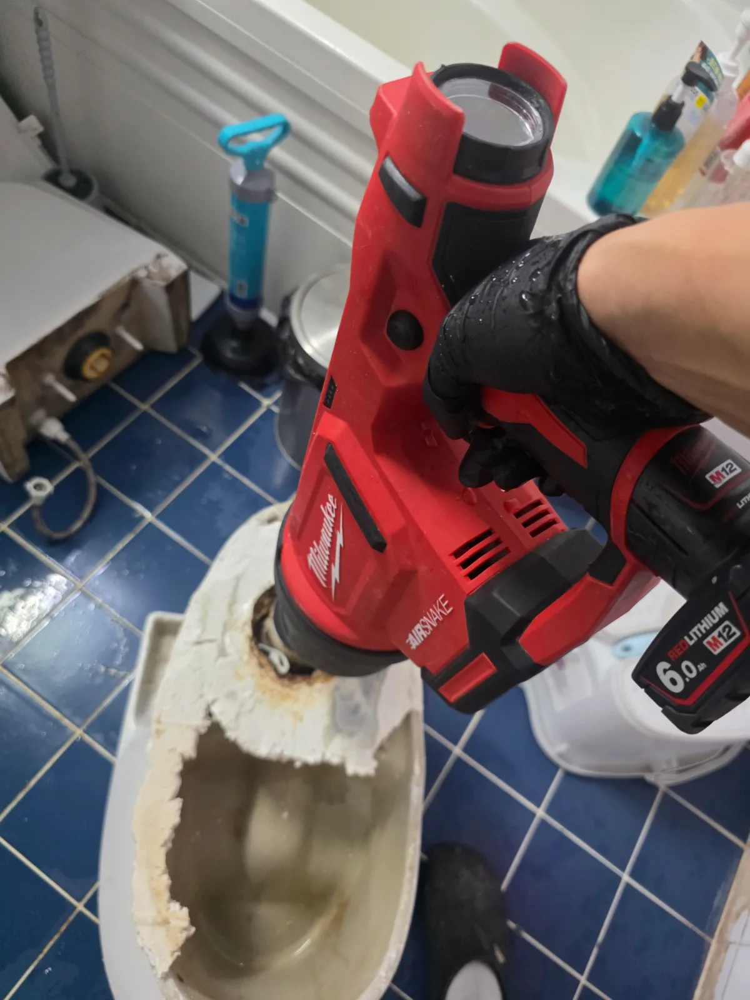

광명시 광명동 변기막힘, 현장 도착 후 진단
광명시 광명동 변기막힘 현장에서 먼저 변기의 배수 상태를 확인했습니다.
변기막힘은 휴지처럼 물에 풀리는 물질이 일시적으로 걸리는 경우도 있지만, 채소나 음식물처럼 형태가 그대로 유지되는 이물질이 들어가면 변기 내부의 굴곡진 통로에서 걸릴 수 있습니다.
이번 현장에서는 외부 작업만으로 정확한 원인을 확인하기 어려워 변기를 바닥에서 탈거하고 내부 상태를 직접 확인하기로 했습니다.
1단계: 증상 확인과 필요한 장비 작업
변기를 바닥에서 조심스럽게 탈거한 뒤 하부 통로를 확인했습니다.
변기를 들어낸 후 살펴보니 휴지와 함께 녹색 채소류 이물질이 통로 안에 그대로 걸려 있는 모습이 확인됐습니다.
막힘 원인이 눈으로 확인된 상황이었기 때문에 이물질을 더 안쪽으로 무리하게 밀어 넣기보다, 현재 위치에서 직접 제거하는 방향으로 작업했습니다.
채소류처럼 물에 쉽게 풀리지 않고 부피가 있는 이물질은 변기 내부 굴곡에 걸려 배수를 방해할 수 있기 때문에 막힘 위치와 상태를 확인한 뒤 제거하는 것이 중요합니다.

2단계: 원인 구간 처리와 정상 작동 확인
확인된 채소류와 휴지를 제거한 뒤에는 에어건 작업을 진행했습니다.
에어건을 이용해 변기 내부 통로에 남아 있을 수 있는 막힘을 추가로 정리하고 통수 상태를 확인했습니다.
이물질 제거와 에어건 작업을 마친 뒤 변기를 다시 원위치에 설치했고, 마지막으로 하부를 고정하고 주변 마감까지 정리했습니다.
이번 광명동 변기막힘 현장은 변기를 직접 탈거해 원인을 확인한 뒤 이물질 제거, 에어건 작업, 재설치까지 순서대로 진행한 사례입니다.

작업 결과와 재발 방지 안내
채소류와 휴지 등 변기 내부를 막고 있던 이물질을 제거하고 에어건 작업을 진행한 뒤 배수 상태를 확인했습니다. 이후 변기를 재설치하고 하부 마감까지 진행하며 작업을 마무리했습니다.
채소, 음식물, 물티슈처럼 물에 쉽게 풀리지 않는 물질은 변기에 넣지 않는 것이 중요합니다. 특히 부피가 있거나 질긴 채소류는 변기 내부 굴곡에서 걸리면서 심한 막힘을 만들 수 있습니다.
변기 물이 평소보다 느리게 내려가거나 차오르는 증상이 나타난다면 반복해서 물을 내리기보다 원인을 먼저 확인하는 것이 좋습니다.
최종 조치: 변기를 탈거해 막힘 위치를 직접 확인하고 하부 통로에 걸려 있던 휴지와 채소류 이물질을 제거했습니다. 이후 에어건 작업으로 변기 내부 통로를 추가로 정리한 뒤 배수 상태를 확인하고 변기를 원위치에 재설치해 하부 마감까지 진행했습니다.
현장 방문 전 확인하는 비용과 작업 범위
신라건축설비는 현장 증상과 배관 구조를 확인한 뒤 필요한 작업과 예상 비용을 안내합니다. 단순 관통으로 해결되는지, 배관내시경·석션·고압세척 또는 변기 탈거가 필요한지는 현장 상태에 따라 달라집니다. 출장비와 야간 작업비, 추가 장비 비용이 발생할 수 있는 경우 작업 전에 먼저 설명하고 동의를 받은 범위에서 진행합니다.
업체를 선택할 때 확인할 사항
무조건적인 ‘0원’ 표현보다 실제 작업 범위, 추가 비용 조건, 사용 장비와 사후 대응 기준을 확인하는 것이 중요합니다. 해결되지 않았을 때의 비용 기준과 작업 후 동일 증상 발생 시 점검 범위를 사전에 문의해두면 불필요한 분쟁을 줄일 수 있습니다.
광명시 변기막힘 자주 묻는 질문
변기막힘은 왜 반복되나요?
광명시 광명동 현장처럼 변기 물이 정상적으로 내려가지 않는 막힘 증상으로 작업을 진행했습니다. 외부에서는 정확한 막힘 원인을 확인하기 어려워 변기 내부에 이물질이 걸려 있을 가능성을 확인하기 위해 탈거 작업을 진행했습니다. 증상은 원인이 현장마다 다를 수 있습니다. 변기 내부 이물질뿐 아니라 하부 오수관 막힘이나 배관 상태 때문에 반복될 수 있습니다. 같은 변기막힘이 재발하면 막힌 위치와 원인을 다시 확인하는 것이 중요합니다.
변기 물이 안 내려가거나 역류하면 변기뚫는업체를 불러야 하나요?
물이 천천히 내려가거나 수위가 차오르고 변기역류가 반복되면 단순 뚫어뻥보다 전문 장비 점검이 필요한 경우가 있습니다. 현장에서는 증상과 배관 구조를 먼저 확인합니다.
변기 이물질 막힘은 변기를 탈거해야 하나요?
물티슈·청소포·플라스틱·음식물처럼 변기 트랩에 걸린 이물질은 위치에 따라 변기 탈거가 필요할 수 있습니다. 무조건 탈거하지 않고 먼저 막힘 위치를 판단합니다.
변기뚫는업체는 어떤 장비로 작업하나요?
현장 상태에 따라 석션, 에어건, 배관내시경, 변기 탈거 등을 사용합니다. 하부 오수관 문제라면 변기만 뚫는 작업보다 배관 구간 확인이 중요합니다.
변기막힘 비용은 어떻게 정해지나요?
단순 관통인지, 이물질 제거와 변기 탈거가 필요한지, 오수관이나 공용배관 작업이 필요한지에 따라 달라집니다. 추가 장비나 작업이 필요하면 진행 전에 범위와 비용을 안내합니다.
변기에서 냄새가 나거나 물이 자주 차오르는 것도 막힘과 관련 있나요?
악취나 수위 이상이 항상 막힘 때문인 것은 아니지만 배수 불량, 오수관 상태, 연결부 문제와 함께 나타날 수 있습니다. 반복되면 현장 점검으로 원인을 구분해야 합니다.
변기막힘 서울·경기 출동지역
신라건축설비는 광명시 광명동 현장을 포함해 서울 25개 구와 경기도 31개 시·군의 배관 문제를 상담합니다. 현장 거리와 기사 배정 상황에 따라 출동 가능 여부를 먼저 안내드립니다.
서울 전 지역
강남구 · 강동구 · 강북구 · 강서구 · 관악구 · 광진구 · 구로구 · 금천구 · 노원구 · 도봉구 · 동대문구 · 동작구 · 마포구 · 서대문구 · 서초구 · 성동구 · 성북구 · 송파구 · 양천구 · 영등포구 · 용산구 · 은평구 · 종로구 · 중구 · 중랑구
경기도 주요 출동지역
수원시 · 용인시 · 고양시 · 화성시 · 성남시 · 부천시 · 남양주시 · 안산시 · 평택시 · 안양시 · 시흥시 · 파주시 · 김포시 · 의정부시 · 광주시 · 하남시 · 광명시 · 군포시 · 양주시 · 오산시 · 이천시 · 안성시 · 구리시 · 의왕시 · 포천시 · 양평군 · 여주시 · 동두천시 · 과천시 · 가평군 · 연천군